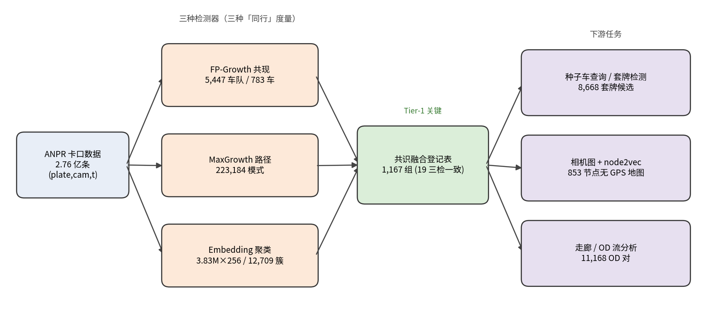

从 2.76 亿 条卡口抓拍中，用三种相互独立的度量空间挖掘"结伴同行"的车辆群体， 并以跨检测器一致性把三件研究原型沉淀为一个可查询的产品。
城市卡口持续记录 (车牌, 相机, 时间)。在月级亿条尺度上，其中蕴含的是车辆之间的
协同结构。但"同行"没有唯一定义，因此我们并行构建三种检测器。
同一 (相机×5 分钟) 格点反复同现 → 高精度、覆盖窄。
协同通过 ≥3 个相机的有向路径 → 强群体证据、带方向。
256 维轨迹形状相近 + 真实共现确认 → 覆盖最广。

← / → 切换三种检测器与能力雷达图。三者按构造彼此分歧——被多个度量空间同时认可的群体才是强证据。
按"标签元组"将三套车队归并为一张去重、可置信排序的表。验证假设被数据推翻： 出现在 1,548 个车队里的"超级连接点"（公交/出租）根本没进登记表——融合自动将其过滤。
| 一致性 | 数量 | 含义 |
|---|---|---|
| 3-of-3 | 19 | 三检测器一致 · 最强证据 |
| 2-of-3 | 1,148 | 两检测器一致 |
| 最大组 | 51 车 | 共现∩路径∩嵌入 |
| 超级连接点 | 0 | 被融合自动剔除 |
输入框即下拉搜索框：从 124 个已验证车牌中选择或筛选；点击查询后，每行伴随车都标注由哪些检测器登记。
同行的对偶问题：一辆车若在过短时间内出现于过远的两地，即物理不可能。 全月标出 221,132 次不可能、8,668 个套牌候选——与 OCR 误读近乎不相交。
最强候选：全月 108 次不可能转移。例如 79→306
仅隔 1 秒，而该路段最快通行需 82 秒 —— 同一车牌的两辆车在同时移动。
相机只是整数编号。用车辆跳转构建相机转移图（853 节点、41 万边），node2vec 恢复二维地图， 并把同行走廊的群体流量叠加其上 —— 下面三张图均为实时可交互。
三种互补度量空间 + 跨检测器共识，把高频假阳性自动过滤，显著提升可解释性与可信度； 相机转移图又独立复现了路径检测器的走廊，多重证据相互印证。全部下游产物均在 31 天全量数据上验证。
MaxGrowth 覆盖车牌（vs FP-Growth 783）
三检测器一致的强同行组
套牌候选车牌（0.04%）
查看项目的可视化报告展示页，或进入代码仓库浏览全部三检测器、融合与下游任务的实现。
Shadow Convoy · Big Data Course Project · 2026